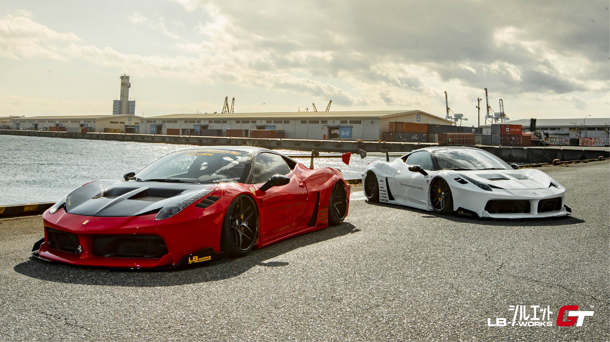

Vision
By following the creed of achieving the most power, superior sound, unique style, best body kit and true versatility, we build supreme performance valvetronic exhaust systems and body kit that are second to none. All fostered by a culture of perseverance and innovation. Demon Customs not only creates exhausts and body kits, we create experiences.

more

Histroy
Bryan Wong, the founder of the company have a dream to create his own car customization shop due to the influence of Japanese car customization culture.As soon as he graduated from Tunku Abdul Rahman University College in 2011, he teamed up with his friend Kris and Wern,started the currently known as the Demon Customs today. Few years later, they found out that they need to provide another service other than building custom body kits for their customers. So, other than appearance, they came out with an idea to create their very own exhaust system that create a better exhaust sound and yet drastically improve the performance. Since then, their business kept on expanding until now and it is one of the best car customization shop in Malaysia.